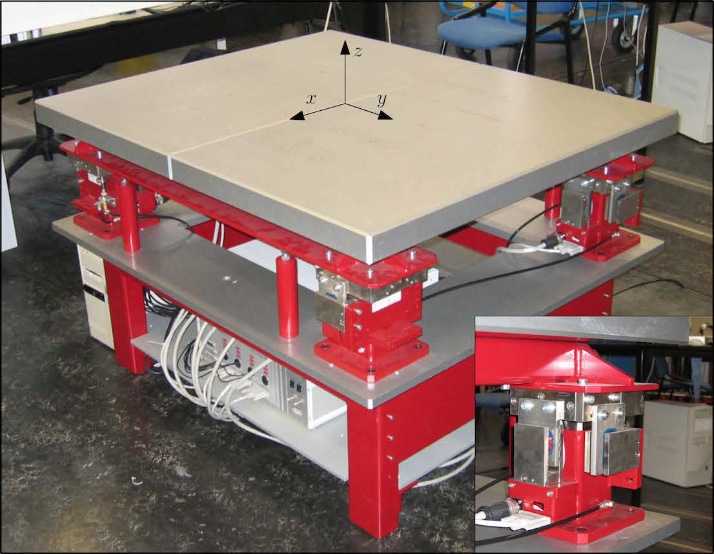
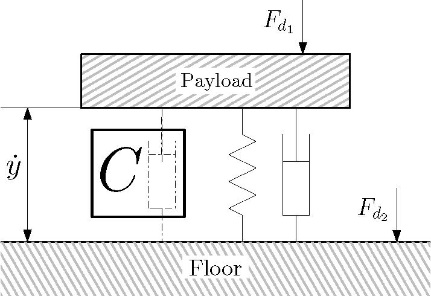
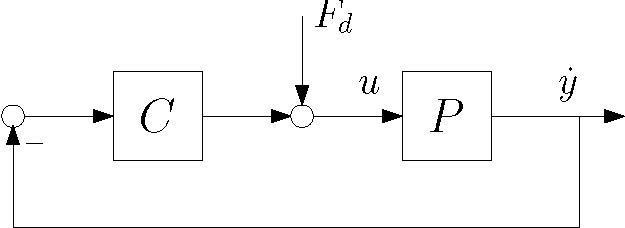
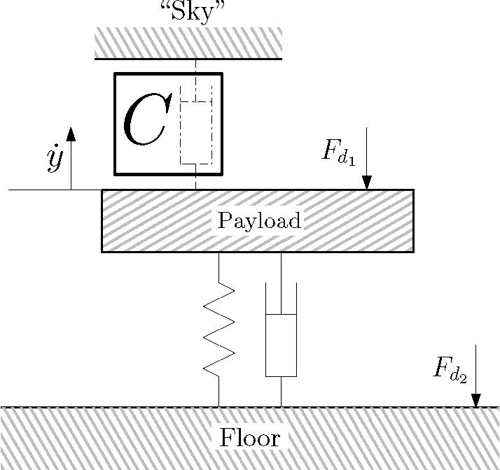
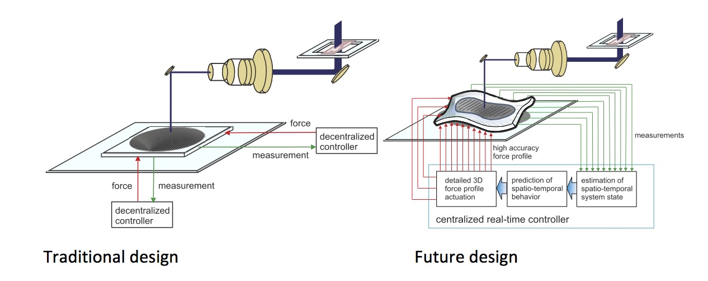

The AVIS setupA very interesting setup in our lab is the Active Vibration Isolation System (AVIS). The AVIS is an industrial setup, built by Integrated Dynamics Engineering, and is used to isolate precision equipment from environmental disturbances. The AVIS is controlled in all six motion degrees of freedom. It is equipped with eight voicecoil actuators and six sensors.  The sensors of the avis are geophones, which are inertial sensors that are designed to measure absolute velocity of the system with respect to an inertial reference frame, instead of relative to the floor. This is particularly interesting from the perspective of vibration isolation, as is explained next, see Voorhoeve et al., 2015 for the original paper. In vibration isolation, it is aimed to suppress the influence of external disturbances on the payload. These external disturbances can be separated in two classes, Fd1, acting on the floor and Fd2, acting directly on the payload, as is illustrated in the following figure.  In passive vibration isolation the challenge is to design suspension characteristics (modeled by a spring and damper in the above figure), such that the disturbances Fd1 and Fd2 are optimally suppressed. To suppress the floor disturbances Fd2, a soft suspension is desired since this maximizes the frequency range in which the floor and AVIS are decoupled, leading to good isolation of the AVIS with respect to floor disturbances. However, to suppress the system disturbances Fd1, a stiff suspension is desired because this minimizes the deflection caused by such a disturbance. So, there is a clear trade-off in passive vibration isolation. In active vibration isolation, the suppression of external disturbances is enhanced through active feedback control, as is illustrated in the following picture.  One possibility is to measure and actively control the velocity of the system with respect to the floor, as shown above in the traditional setup. In this configuration however, the controller can simply be interpreted as an extra suspension element between the floor and the AVIS. This means the same trade-off as in passive vibration isolation exists between the suppression of Fd1 and Fd2. If a measurement is available of the absolute velocity of the system, so-called skyhook damping can be used. The name skyhook damping references the interpretation of the controller as a suspension element (damper) between the AVIS and the fixed world or ‘‘sky’’, the figure below. This effectively eliminates the trade-off between the suppression of floor disturbances and suppression of system disturbances, since they are both suppressed by a strong coupling between the AVIS and the (disturbance free) fixed world.  A Benchmark challengeThe AVIS system is used as a benchmark system for next-generation motion control. These next-generation systems are expected to be lightweight. Consequently, these will exhibit dominant lightly damped flexible dynamics. In the future, we will actively compensate these dynamics through many actuators and sensors. In addition, a distinction will be made between measured variables and performance variables, as is explained on the inferential control page. As is argued in Oomen et al., 2014, model-based control is essential to systematically design controllers for such highly complex systems. The main challenge lies in accurately identifying the relevant models of such systems, which have very high order and large input-output dimensionality.  The AVIS is selected as a benchmark because of its properties that are very similar to next-generation systems, albeit that those are expected to have many more inputs and outputs. An important advantage of the AVIS is that it is open-loop stable, avoiding closed-loop identification issues. In the near future, we hope to be able to provide datasets of more complex motion systems, too (see also lab page). In the paper
two benchmark challenges are proposed
The details of the benchmark problems are described in the above paper, on the dedicated SYSID website, and on the IFAC TC website. Matlab filesWe provide both the raw data, the matlab files to process them, and the processed results. The latter include the BLA, variance estimates, etc. Note that the raw data is quite large, so we recommend to download the matlab files and processed results first. Multisine data - robust methodThe following files are available in the folder Robust_method The processed file Results_Robust_Identification.mat contains
The file CreatePlotAVIS_RM generates the plots for inspection. To generate these files yourself, you need the file Process_data_BLA_RM_v5.m, which generates the results in Results_Robust_Identification.mat. To do this, you need the folder Data_robust. Before proceeding, all data is subject to the CC BY-ND licence. So, please don't alter the dataset/reduce it to parts. Of course, you are more than welcome to apply your favorite identification algorithm, and present its results in your papers, etc.! Please cite the original paper
All data sets can be found Remark: at present the raw data is not yet uploaded due to size issues. These will be uploaded soon. In the meantime, please send me an email if you want access, and we will provide the files. Comments, questions, requests, …If you have any comments, questions, requests, ideas, suggestions, etc., please do not hesitate to contact us! Relevant publications
AcknowledgementThis benchmark setup was set up with Robbert Voorhoeve, Annemiek van Rietschoten, and Egon Geerardyn. We want to thank Håkan Hjalmarsson for stimulating us for doing so and inviting us to the invited session at the 17th IFAC Symposium on System Identification, SYSID 2015. Finally, Maarten Steinbuch and Johan Schoukens are gratefully acknowledged for sharing their insight on high-tech motion systems and frequency domain system identification, respectively. |